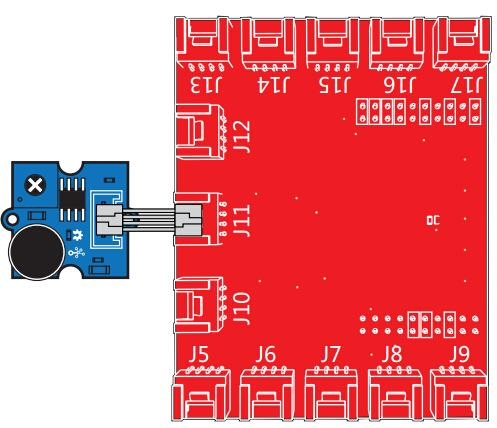

Grove - Sound Sensor can detect the sound strength of the environment. The main component of the module is a simple microphone, which is based on the LM358 amplifier and an electret microphone. This module's output is analog and can be easily sampled and tested by a Seeeduino.

Follow these steps to build a sample Grove circuit using this module but without using any microcontroller board:
You can use either the Grove - USB Power module or the Grove - DC Jack Power module for building this Grove circuit.
Follow these simple steps to build a Grove circuit using the light sensor:
// Function: If the sound sensor senses a sound that is up to the threshold you set in the code, the LED is on for 200ms. // Hardware: Grove - Sound Sensor, Grove - LED /*macro definitions of the sound sensor and the LED*/ #define SOUND_SENSOR A0 #define LED 3 // the number of the LED pin #define THRESHOLD_VALUE 400//The threshold to turn the led on 400.00*5/1024 = 1.95v void setup() { Serial.begin(9600); pins_init(); } void loop() { int sensorValue = analogRead(SOUND_SENSOR);//use A0 to read the electrical signal Serial.print("sensorValue "); Serial.println(sensorValue); if(sensorValue > THRESHOLD_VALUE) { turnOnLED();//if the value read from A0 is larger than 400,then light the LED delay(200); } turnOffLED(); } void pins_init() { pinMode(LED, OUTPUT); pinMode(SOUND_SENSOR, INPUT); } void turnOnLED() { digitalWrite(LED,HIGH); } void turnOffLED() { digitalWrite(LED,LOW); }
Turning on a LED by Sound (Sound Sensor)

/* Sound Sensor A simple program demonstrate sound sensor senses a sound that is up to the threshold you set in the code, the LED is on for 1s. The circuit: * sig pin of the sound sensor to the analog pin 24 (J6 plug on Grove Base BoosterPack) * one side pin (either one) to ground * the other side pin to +VCC * LED anode (long leg) attached to RED_LED * LED cathode (short leg) attached to ground * Note: This example code is in the public domain. http://www.seeedstudio.com/depot/Grove-Sound-Sensor-p-752.html?cPath=25_128 */ #define SOUND_SENSOR 24 /* sound sensor pin */ #define LED RED_LED /* LED pin */ #define THRESHOLD_VALUE 3000 /* Depending on your LaunchPad’s ADC resolution you may have to adjust the threshold */ #define ON HIGH /* led on */ #define OFF LOW /* led off */ #define _handle_led(x) digitalWrite(LED, x) /* handle led */ /* Global Variables */ int sound_value = 0; void setup() { /* Initialize led pin */ pinMode(LED, OUTPUT); digitalWrite(LED, LOW); } void loop() { /* read the sound value */ sound_value = analogRead(SOUND_SENSOR); /* if the value is larger than threshold, turn on led */ if(sound_value > THRESHOLD_VALUE) { _handle_led(ON); delay(1000); } _handle_led(OFF); }
You should connect to GrovePi+ with Grove - Sound Sensor and Grove - Green LED. Such as the following picture. When sound level greater than a certain value,the LED will turn on.
# GrovePi + Grove Sound Sensor + Grove LED import time import grovepi # Connect the Grove Sound Sensor to analog port A0 # SIG,NC,VCC,GND sound_sensor = 0 # Connect the Grove LED to digital port D5 # SIG,NC,VCC,GND led = 5 grovepi.pinMode(sound_sensor,"INPUT") grovepi.pinMode(led,"OUTPUT") # The threshold to turn the led on 400.00 * 5 / 1024 = 1.95v threshold_value = 400 while True: try: # Read the sound level sensor_value = grovepi.analogRead(sound_sensor) # If loud, illuminate LED, otherwise dim if sensor_value > threshold_value: grovepi.digitalWrite(led,1) else: grovepi.digitalWrite(led,0) print "sensor_value =", sensor_value time.sleep(.5) except IOError: print "Error"
cd GrovePi/Software/Python/
sudo python grove_sound_sensor.py
To begin editing programs that live on BBG, you can use the Cloud9 IDE.
As a simple exercise to become familiar with Cloud9 IDE, creating a simple application to blink one of the 4 user programmable LEDs on the BeagleBone is a good start.
If this is your first time to use Cloud9 IDE, please follow this link.
Step1: Set the Grove - UART socket as a Grove - GPIO Socket, just follow this link.
Step2: Click the "+" in the top-right to create a new file.


Step3: Copy and paste the following code into the new tab
from Adafruit_I2C import Adafruit_I2C import time ADDR_ADC121 = 0x50 REG_ADDR_RESULT = 0x00 REG_ADDR_ALERT = 0x01 REG_ADDR_CONFIG = 0x02 REG_ADDR_LIMITL = 0x03 REG_ADDR_LIMITH = 0x04 REG_ADDR_HYST = 0x05 REG_ADDR_CONVL = 0x06 REG_ADDR_CONVH = 0x07 i2c = Adafruit_I2C(ADDR_ADC121) class I2cAdc: def __init__(self): i2c.write8(REG_ADDR_CONFIG, 0x20) def read_adc(self): "Read ADC data 0-4095." data_list = i2c.readList(REG_ADDR_RESULT, 2) #print 'data list', data_list data = ((data_list[0] & 0x0f) << 8 | data_list[1]) & 0xfff return data if __name__ == '__main__': # Connect the Grove - I2C ADC to I2C Grove port of Beaglebone Green. adc = I2cAdc() while True: print 'sensor value ', adc.read_adc() time.sleep(.2)
Step4: Save the file by clicking the disk icon with a name "grove_i2c_adc.py".
Step5: Create a new file Copy the following code into the new tab and save it with the .py extension.
import time from logo import print_seeedstudio import grove_i2c_adc import Adafruit_BBIO.GPIO as GPIO # Reference voltage of ADC is 3.0v ADC_REF = 3.0 # Vcc of the grove interface is normally 3.3v GROVE_VCC = 3.3 adc = grove_i2c_adc.I2cAdc() def read_sound_sensor_values(): "Read voltage values from Grove Sound Sensor" total_value = 0 for index in range(5): sensor_value = adc.read_adc() # print "sensor_value = ", sensor_value total_value += sensor_value time.sleep(0.01) # print "total_value = ", total_value average_value = float(total_value / 5) voltage_value = average_value / 4095 * ADC_REF * 2 return voltage_value # Function: If the sound sensor senses a sound that is up to the threshold you set in the code, the LED is on for 1s. # Hardware: Grove - I2C ADC, Grove - Sound Sensor, Grove - LED(You can also replace Grove - LED with Grove - Buzzer.) # Note: Use P9_22(UART2_RXD) as GPIO. # Connect the Grove LED to UART Grove port of Beaglebone Green. # Connect the Grove - I2C ADC to I2C Grove port of Beaglebone Green, and then connect the Grove - Sound Sensor to Grove - I2C ADC. if __name__== '__main__': print_seeedstudio() while True: try: # Read voltage values from Grove Sound Sensor sensor_voltage_value = read_sound_sensor_values() print "sensor_voltage_value = ", sensor_voltage_value # time.sleep(2) except IOError: print "Error"
Step6: Connect Grove Sound Sensor to Grove I2C ADC which is connected to Grove I2C socket on BBG.
Step7: Run the code. You'll find that the terminal outputs Sound value every 2 seconds.
This Grove module is available as part of the following Grove Kit Series:
Alternatively, it can be bought stand-alone here at the Seeed Studio Bazaar.
If you want to make some awesome projects by Grove - Sound Sensor, here's some projects for reference.
When someone talk to Groots， they will dance for him/her and show him/her their wonderful performance. It is the sound sensor that works the magic. The servo is activated whenever a sound is received by the sensor.


This is an IoT demo made by LinkIt ONE and Grove including sounder sensor.
With this demo, we can:

Copyright (c) 2008-2016 Seeed Development Limited (www.seeedstudio.com / www.seeed.cc)